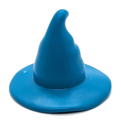

Welcome to the SampleSpace!The SampleSpace is a hidden collection of bits and pieces. Everything here is beyond optional for the USMR course.
If you’re feeling inquisitive, have a nose around.
If you came here by accident and don’t like the look of it, that is absolutely fine, you can completely forget about this page (and will probably be better off for doing so!)
simulating covarying variables.
When we simulate one continuous variable on its own, we have been using rnorm():
The way to express this variable in mathematical terms would be to use \(\sim N(\mu, \sigma^2)\) to indicate that it is normally distributed with mean \(\mu\) and variance \(\sigma^2\):
\[
X \sim N(100, 15^2)
\] When we have two variables that co-vary, we need to express both at once…
So we will have two means, two variances, and the covariance. So we have something like:
\[ \begin{pmatrix} X \\ Y \end{pmatrix} \sim N \left( \begin{pmatrix} \mu_x \\ \mu_y \end{pmatrix}, \begin{pmatrix} \sigma_x^2 & \text{Cov}(X,Y) \\ \text{Cov}(X,Y) & \sigma_y^2 \end{pmatrix} \right) \]
In R, the way to simulate variables matches this setup, and uses the mvrnorm() function from the MASS package. (note, i don’t like using library(MASS) because it contains functions called filter() and select() that get in the way of the tidyverse functions of the same name!)
Play around with the different parts of the code below:
simulating regression
When we move from covariance/correlation to linear regression, we are assuming a directionality to things: Y changes as a result of X, but not vice versa.
This means we can do our simulations in a stepwise manner!
For instance, let’s simulate data for a pretend study. Suppose we are planning a simple experiment, where we give 50 people a randomly chosen amount of money between £1 and £100, and then ask them to rate how happy they feel on a scale of -10 to 10.
We can write in mathematical terms the way these data would be generated as so:
\[
\begin{align}
\text{happy}_i &\sim N(\mu_{\text{happy}_i}, 2^2) \\
\mu_{\text{happy}_i} &= -5 + 0.1 \cdot \text{money}_i \\
\text{money}_i &\sim \text{Unif}(1, 100) \\
\end{align}
\]
If we were to do this study in reality, we wouldn’t know the specific values that generates the outcome distribution. We would be starting from a place where we know the structure, but not the values (in blue below):
\[
\begin{align}
\text{happy}_i &\sim N(\mu_{\text{happy}_i}, \color{blue}{\sigma_e^2}\color{black}{)} \\
\mu_{\text{happy}_i} &= \color{blue}{b_0} + \color{blue}{b_1} \color{black}{\cdot} \text{money}_i \\
\text{money}_i &\sim \text{Unif}(1, 100) \\
\end{align}
\]
And those are what we get estimates for when we fit a regression model!
simulating statistical uncertainty
Thus far in these little extra bits, we’ve been doing simulations of individual datasets to help understand the machinery (like above), and in last week’s one we also saw that we could use simulation for doing things like determining how much data to collect in order to detect an effect of a given size (a “power calculation”).
Another use of simulation is to visualise the uncertainty in statistical estimates.
Suppose we have fitted a model to some data, such as below.
Alongside our coefficients, we also have their estimated standard errors, capturing the uncertainty in coefficient estimates due to sampling variability.
We can use these to get confidence intervals, which we can also plot:
Behind the scenes, the model estimates uncertainty in both the intercept and in the slope, and it does so by estimating them jointly - i.e., it estimates how uncertainty in the intercept relates to uncertainty in the slope:
\[ \begin{pmatrix} \text{Var}(int) & \text{Cov}(int,slope) \\ \text{Cov}(int,slope) & \text{Var}(slope) \end{pmatrix} \]
CautionWhy?
Why?? because the fitting of the line to minimse the sum of squared residuals forces the line to pass right through the center of the cloud of data points. This entails that the intercept is bound directly to the slope. If our sample happens to have a slightly steeper slope, then our intercept would be lower to compensate.
In mathematical terms, the line must always go through the center of the data, at the average x and average y (at \(\bar x\) and \(\bar y\)):
\(\bar{y} = b_0 + b_1 \bar{x}\)
Which means that:
\(b_0 = \bar{y} - b_1\bar{x}\)
So if we happen to see a bigger \(b_1\), we should expect a smaller \(b_0\).
We can get out the model estimated uncertainty in the parameters using vcov():
Question
Martin had a nice slide with “many regression” lines to show uncertainty in the estimates.
Using coef(), vcov(), MASS::mvrnorm(), and ggplot()+geom_abline(), can we do the same?